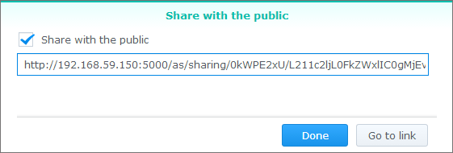

Überblick
Mit Audio Station können Sie die auf Ihrem Synology NAS gespeicherte Musik über das Internet organisieren, durchsuchen und wiedergeben. Audio Station unterstützt auch viele verschiedenen Dateitypen; dadurch können Sie Ihre Musik in einem beliebigen Format genießen. Sie können DS Audio, eine mobile Anwendung, die Audio Station ergänzt, herunterladen, damit Sie auf die auf Ihrem Synology NAS gespeicherte Musik zugreifen können, wenn Sie unterwegs sind.
1. Audio Station installieren
- Gehen Sie zu Paketzentrum auf und suchen Sie nach Audio Station. Klicken Sie auf Installieren.

2. Audiodateien im Ordner "music" speichern
- Gehen Sie zu File Station > music und klicken Sie auf Hochladen.
- Wählen Sie die Dateien aus, die Sie von Ihrem lokalen Computer zum Ordner music hochladen möchten.

3. Musik durchsuchen
Nachdem Sie Musikdateien hochgeladen haben, können Sie sie auf Audio Station wiedergeben und durchsuchen. Wenn Sie auf Ihre Musikdateien zugreifen und sie durchsuchen möchten, wenn Sie sich nicht in Ihrem lokalen Netzwerk befinden, sollten Sie QuickConnect unter Systemsteuerung > QuickConnect aktivieren. Wenn Sie kein Synology-Konto besitzen, können Sie innerhalb von Minuten eines einrichten und anschließend Ihrer DiskStation eine QuickConnect-ID zuweisen. Nachdem Sie diese Option aktiviert haben, können Sie sich bei DSM anmelden und von überall aus auf Ihre Musik zugreifen. Sie können sich mit Ihrer QuickConnect-ID auch bei DS Audio anmelden, damit Sie sich nicht Ihre IP-Adresse merken brauchen.
3.1 Bibliothek
Die Bibliothek enthält Musik im freigegebenen Ordner music oder in anderen indizierten Ordnern auf Ihrem Synology NAS. Auf der Registerkarte Bibliothek ist Ihre Musik nach Kategorien sortiert, sodass Sie verschiedene Möglichkeiten haben, Ihre Musik gemäß Ihren Anforderungen und Wünschen zu durchsuchen. Darüber hinaus finden Sie mühelos jedes Lied, nach dem Sie suchen. Sie können in die einzelnen Kategorien klicken, um Ihre Suche durchzuführen, oder Sie wählen die Kategorie, in der Sie suchen möchten, aus dem Dropdown-Menü in der Suchleiste aus.

3.2. Modi anzeigen
Über die Symbole oben rechts in Audio Station können Sie zwischen verschiedenen Anzeigemodi wechseln, in denen Sie Ihre Musikbibliothek durchsuchen können.
- In der Listenansicht wird Ihre Musik als Liste mit dem Titel des Liedes, dem Interpreten, dem Album, der Dauer des Liedes, der Titelnummer und der Bewertung angezeigt.
- In den Grafiken werden der Name des Titels und des Albums sowie die Grafiken des Albums angezeigt.
- Wiedergabe-Warteschleife zeigt die Wiedergabe-Warteschleife im Vollbildmodus mit Album-Cover und Liedertiteln oder Texten an.


4. Öffentliche Freigabe
Die Funktion „Öffentliche Freigabe“ von Audio Station ermöglicht das Freigeben von Liedern für die Öffentlichkeit. Dazu erhalten Sie einen Link, den Sie an Personen senden können, die entweder nicht Ihrem Netzwerk angehören oder keinen Synology NAS besitzen. Sobald sie den Link erhalten haben, können sie sich die Lieder anhören.
4.1. Lieder für die Öffentlichkeit freigeben
- Rechtsklicken Sie auf das (die) Lied(er), das (die) Sie freigeben möchten, und wählen Sie Für die Öffentlichkeit freigeben aus.
- Es sind zwei Optionen verfügbar, wenn Sie Lieder für die Öffentlichkeit freigegeben:
- Aktivieren Sie, wenn Sie nur ein Lied für die Freigabe auswählen, im angezeigten Dialogfeld das Kontrollkästchen neben Für die Öffentlichkeit freigeben, um den Link zu aktivieren. 
- Wenn Sie mehrere Lieder für die Freigabe auswählen, wird eine Wiedergabeliste erstellt. Sie können Ihrer Wiedergabeliste einen Namen geben sowie einen Gültigkeitszeitraum für den Link angeben, in dem Sie das Kontrollkästchen neben Gültigkeitszeitraum festlegen aktivieren und auf OK klicken.

- Kopieren Sie den Link und fügen Sie ihn bei der Person ein, mit der Sie die Wiedergabeliste teilen möchten, oder klicken Sie auf Zum Link gehen, um den Link direkt aufzusuchen.

5. Musik auf Mobilgeräten organisieren und wiedergeben
DS audio läuft auf iPad/iPhone/iPod touch, Android-Geräten und Windows Phones. Die App ist kostenlos erhältlich bei Apple App Store, Google Play und Windows Phone Store. Für einen sofortigen Download können Sie auch den nachfolgenden QR Code scannen.